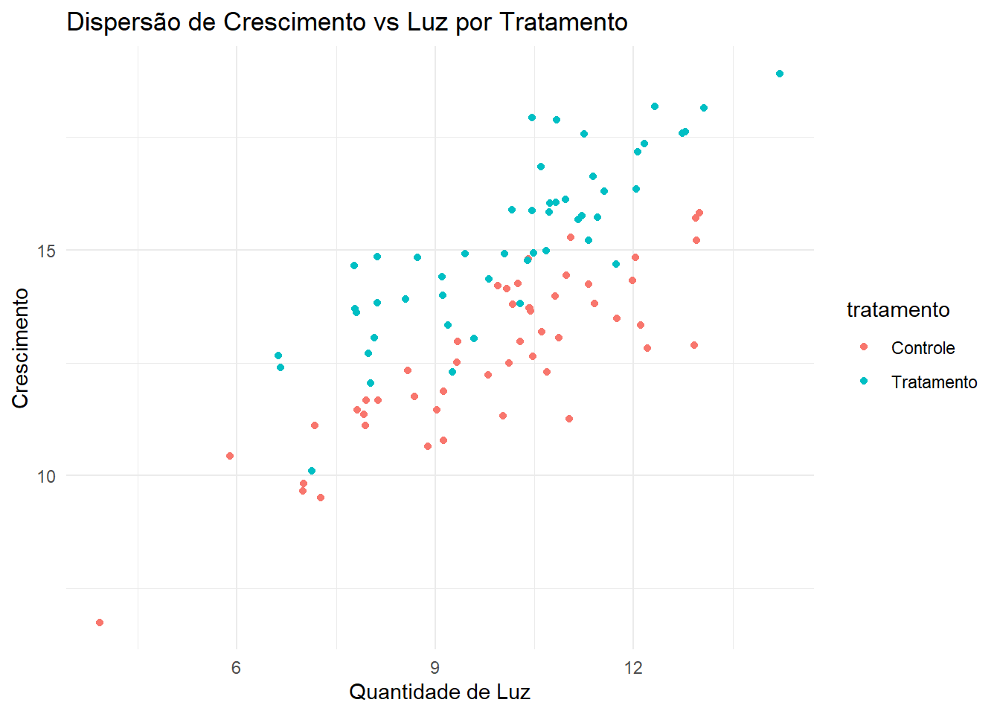
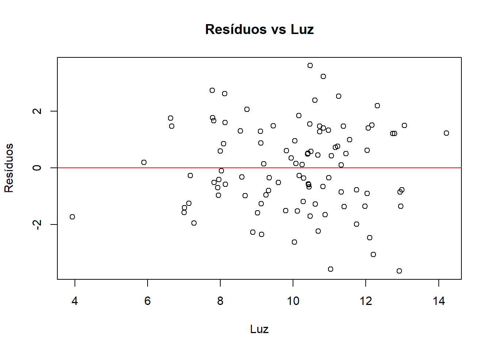
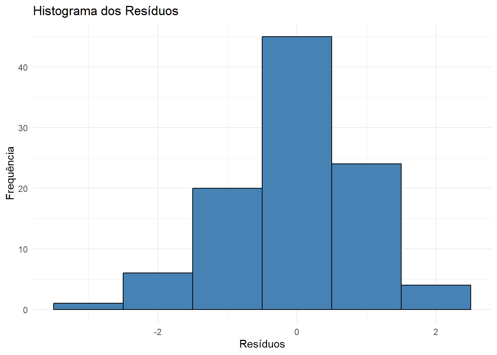
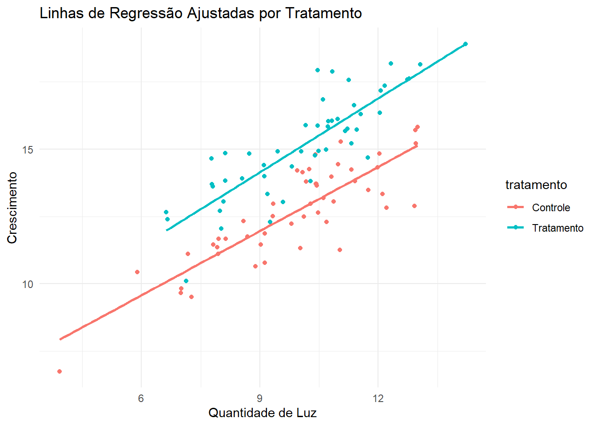

Código
# Carregar pacotes necessários
library(ggplot2)
library(dplyr)
library(knitr)
library(car)
library(kableExtra)# Carregar pacotes necessários
library(ggplot2)
library(dplyr)
library(knitr)
library(car)
library(kableExtra)A Análise de Covariância (ANCOVA) é uma técnica estatística que combina ANOVA e regressão linear para avaliar se há diferenças significativas entre grupos enquanto controla por uma ou mais variáveis contínuas (covariáveis). Esta análise é útil em estudos bioecológicos onde fatores ambientais podem influenciar as variáveis de interesse.
Realizar uma ANCOVA utilizando dados fictícios de bioecologia, demonstrando todas as etapas necessárias, desde a criação dos dados até a interpretação dos resultados, incluindo os pressupostos da análise.
Vamos criar um conjunto de dados fictício que representa a influência de um tratamento (por exemplo, fertilizante) no crescimento de plantas, controlando pela quantidade de luz recebida.
set.seed(234)
# Criar variáveis
n <- 100 # número de observações
tratamento <- factor(rep(c("Controle", "Tratamento"), each = n/2))
luz <- rnorm(n, mean = 10, sd = 2) # covariável contínua
# Efeito do tratamento e da covariável na resposta
crescimento <- 5 + 2*(tratamento == "Tratamento") + 0.8*luz + rnorm(n, sd = 1)
# Criar data frame
dados <- data.frame(tratamento, luz, crescimento)
# Visualizar 8 linhas aleatórias dos dados
set.seed(123)
kbl(dados[sample(nrow(dados), 8), ])| tratamento | luz | crescimento | |
|---|---|---|---|
| 31 | Controle | 9.326637 | 12.50559 |
| 79 | Tratamento | 7.811968 | 13.61418 |
| 51 | Tratamento | 11.552413 | 16.29175 |
| 14 | Controle | 11.029693 | 11.26090 |
| 67 | Tratamento | 11.161185 | 15.66785 |
| 42 | Controle | 9.123828 | 11.86808 |
| 50 | Controle | 10.985953 | 14.44231 |
| 43 | Controle | 12.957275 | 15.20828 |
dados %>%
group_by(tratamento) %>%
summarise(
`Crescimento Médio` = mean(crescimento),
`Luz Média` = mean(luz)
) %>%
kable(caption = "Estatísticas Descritivas por Tratamento")| tratamento | Crescimento Médio | Luz Média |
|---|---|---|
| Controle | 12.65470 | 9.874044 |
| Tratamento | 15.18681 | 10.142479 |
ggplot(dados, aes(x = luz, y = crescimento, color = tratamento)) +
geom_point() +
labs(
title = "Dispersão de Crescimento vs Luz por Tratamento",
x = "Quantidade de Luz",
y = "Crescimento"
) +
theme_minimal()
# Gráfico de resíduos vs covariável
modelo_linearidade <- lm(crescimento ~ luz, data = dados)
plot(dados$luz, resid(modelo_linearidade), main = "Resíduos vs Luz", xlab = "Luz", ylab = "Resíduos")
abline(h = 0, col = "red")
Interpretação: A ausência de padrões claros no gráfico indica que o pressuposto de linearidade é atendido.
# Modelo com interação
modelo_interacao <- lm(crescimento ~ tratamento * luz, data = dados)
anova(modelo_interacao)Analysis of Variance Table
Response: crescimento
Df Sum Sq Mean Sq F value Pr(>F)
tratamento 1 160.289 160.289 166.1490 <2e-16 ***
luz 1 239.666 239.666 248.4279 <2e-16 ***
tratamento:luz 1 1.176 1.176 1.2192 0.2723
Residuals 96 92.614 0.965
---
Signif. codes: 0 '***' 0.001 '**' 0.01 '*' 0.05 '.' 0.1 ' ' 1Interpretação: Se a interação entre tratamento e luz não for significativa, o pressuposto de homogeneidade de regências é atendido.
O que Acontece se a Homogeneidade de Regências Não for Atendida?
Se a homogeneidade de regências for violada, isto é, se as inclinações das linhas de regressão forem significativamente diferentes entre os grupos, as seguintes implicações ocorrem:
Interpretação Complicada: O efeito do fator não é consistente em todos os níveis da covariável, tornando difícil generalizar os efeitos do tratamento.
Resultados Enganosos: A ANCOVA pode subestimar ou superestimar os efeitos reais, levando a conclusões errôneas sobre a significância dos efeitos.
Alternativas Necessárias: A análise padrão de ANCOVA pode não ser apropriada, e outras abordagens devem ser consideradas.
# Ajustar o modelo ANCOVA
modelo_ancova <- lm(crescimento ~ tratamento + luz, data = dados)
# Extrair os resíduos e criar um data frame
dados_residuos <- data.frame(Residuos = resid(modelo_ancova))
# Criar o histograma dos resíduos com ggplot2
ggplot(dados_residuos, aes(x = Residuos)) +
geom_histogram(binwidth = 1, fill = "steelblue", color = "black") +
labs(
title = "Histograma dos Resíduos",
x = "Resíduos",
y = "Frequência"
) +
theme_minimal()
# Teste de Shapiro-Wilk
shapiro.test(dados_residuos$Residuos)
Shapiro-Wilk normality test
data: dados_residuos$Residuos
W = 0.98142, p-value = 0.1712Interpretação: Um p-valor maior que 0.05 no teste de Shapiro-Wilk indica que os resíduos seguem uma distribuição normal.
# Teste de Levene
leveneTest(crescimento ~ tratamento, data = dados)Levene's Test for Homogeneity of Variance (center = median)
Df F value Pr(>F)
group 1 0.1953 0.6595
98 Interpretação: Um p-valor maior que 0.05 no teste de Levene indica que as variâncias são homogêneas entre os grupos.
# Modelo ANCOVA
modelo_ancova <- lm(crescimento ~ tratamento + luz, data = dados)
summary(modelo_ancova)
Call:
lm(formula = crescimento ~ tratamento + luz, data = dados)
Residuals:
Min 1Q Median 3Q Max
-2.5324 -0.5487 0.1555 0.5192 2.4708
Coefficients:
Estimate Std. Error t value Pr(>|t|)
(Intercept) 4.2749 0.5501 7.771 8.21e-12 ***
tratamentoTratamento 2.3043 0.1972 11.685 < 2e-16 ***
luz 0.8487 0.0539 15.744 < 2e-16 ***
---
Signif. codes: 0 '***' 0.001 '**' 0.01 '*' 0.05 '.' 0.1 ' ' 1
Residual standard error: 0.9833 on 97 degrees of freedom
Multiple R-squared: 0.81, Adjusted R-squared: 0.8061
F-statistic: 206.8 on 2 and 97 DF, p-value: < 2.2e-16tratamento é significativo.luz tem um efeito significativo no crescimento.# Gráfico das linhas de regressão ajustadas
ggplot(dados, aes(x = luz, y = crescimento, color = tratamento)) +
geom_point() +
geom_smooth(method = "lm", se = FALSE) +
labs(
title = "Linhas de Regressão Ajustadas por Tratamento",
x = "Quantidade de Luz",
y = "Crescimento"
) +
theme_minimal()`geom_smooth()` using formula = 'y ~ x'
A ANCOVA realizada permite concluir que:
Este script serve como modelo para futuras análises de ANCOVA, incluindo a verificação dos pressupostos, realização da análise e interpretação dos resultados, com visualizações gráficas e tabelas formatadas.